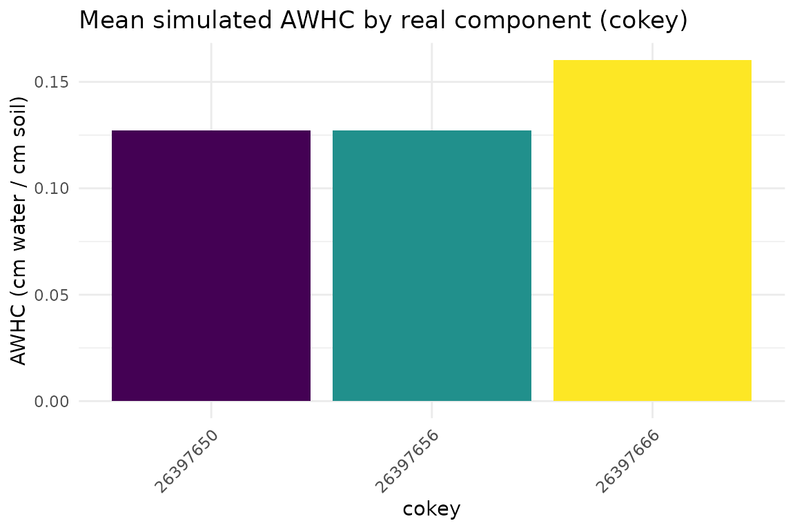
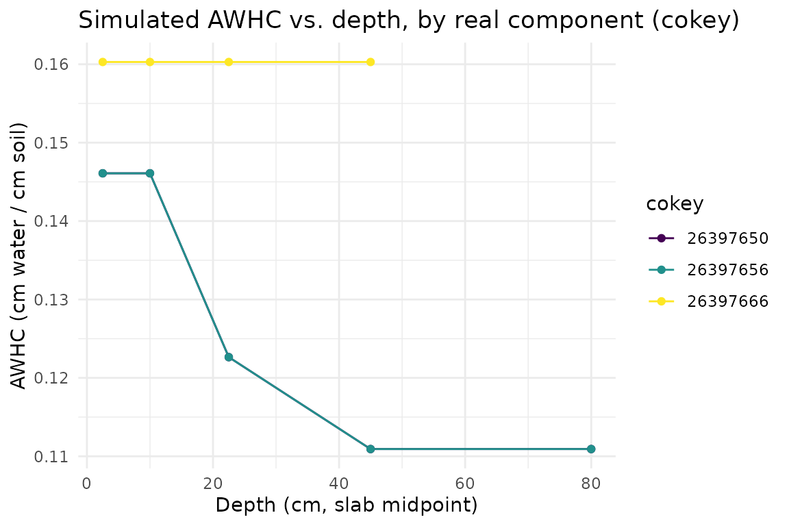
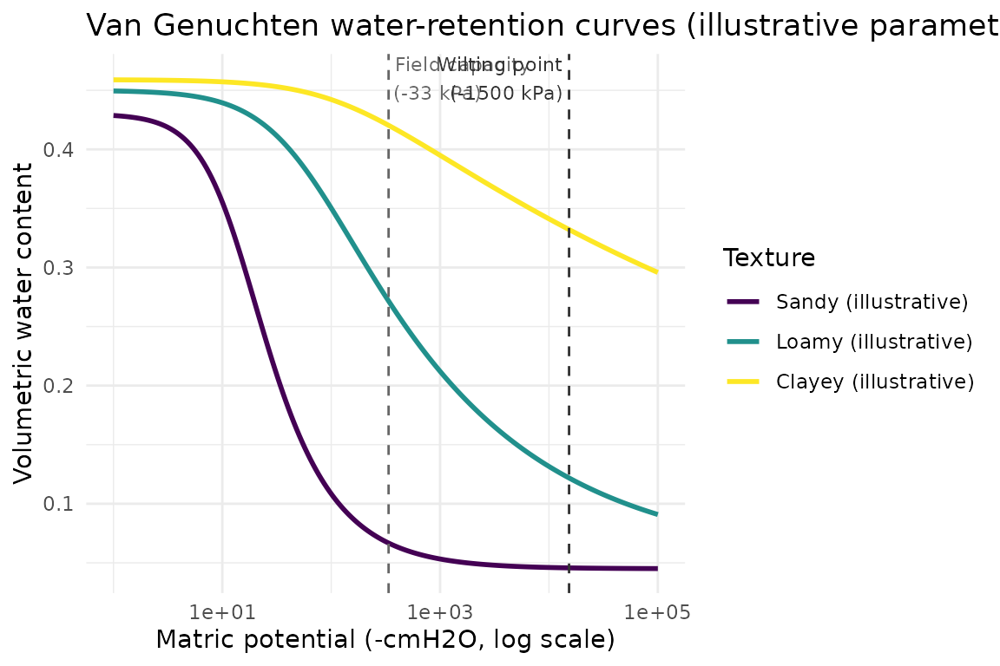

Available Water Storage via Van Genuchten / ROSETTA
Source:vignettes/aws-van-genuchten.Rmd
aws-van-genuchten.RmdOverview
Available water storage (AWS) - how much plant-available water a soil
can hold - is derived from the van Genuchten (1980) water-retention
curve, whose shape parameters soilSIM estimates via
soilDB::ROSETTA(), a live pedotransfer-function API. This
vignette derives real AWS estimates for real soil components from the
same Amador-area AOI used in the “Getting Started” vignette. See
soilSIM/docs/07_aws_van_genuchten_modeling.md for the full
function-level reference, including two intentional, ported-as-is quirks
in simulate_vg_aws() this vignette doesn’t need to
touch.
Step 1: Real texture/bulk-density input
calculate_aws_df() expects ROSETTA’s own input variable
names (sand_total, silt_total,
clay_total, bulk_density_third_bar,
water_retention_third_bar,
water_retention_15_bar) - different from soilSIM’s usual
sandtotal_r/claytotal_r SSURGO convention,
since these are ROSETTA’s own API contract. This vignette’s cached input
was built directly from the real SSURGO download used in the “Getting
Started” vignette:
aws_example <- readRDS(system.file("extdata", "aws_rosetta_example.rds", package = "soilSIM"))
rosetta_input <- aws_example$input
unique(rosetta_input$compname)
#> [1] "Chaix" "Cohasset"
rosetta_input[1:6, c("compname", "hzdept_r", "hzdepb_r", "sand_total", "clay_total",
"bulk_density_third_bar")]
#> compname hzdept_r hzdepb_r sand_total clay_total bulk_density_third_bar
#> 2 Chaix 0 20 66.3 10 1.19
#> 3 Chaix 0 20 66.3 10 1.19
#> 4 Chaix 0 20 66.3 10 1.19
#> 5 Chaix 20 86 66.3 10 1.50
#> 6 Chaix 20 86 66.3 10 1.50
#> 7 Chaix 20 86 66.3 10 1.50These are 15 real horizons across 2 real components from the
Amador-area AOI, each with complete real texture, bulk density, and
water-retention data (calculate_aws_df() requires all six
ROSETTA input variables present).
Step 2: Run ROSETTA and simulate available water storage
calculate_aws_df() (1) calls
soilDB::ROSETTA() - a live POST to
handbook60.org - to derive van Genuchten shape parameters
from the texture/bulk-density inputs, (2) Monte Carlo-simulates field
capacity and permanent wilting point water content via
simulate_vg_aws(), and (3) depth-slices the result to
standard intervals via aqp::slab():
# The real call this vignette's cached data came from (requires live network access):
aws_result <- calculate_aws_df(rosetta_input)
aws_result <- aws_example$result
aws_result
#> # A tibble: 15 × 4
#> cokey top bottom AWHC
#> <chr> <int> <int> <dbl>
#> 1 26397650 0 5 0.146
#> 2 26397650 5 15 0.146
#> 3 26397650 15 30 0.123
#> 4 26397650 30 60 0.111
#> 5 26397650 60 100 0.111
#> 6 26397656 0 5 0.146
#> 7 26397656 5 15 0.146
#> 8 26397656 15 30 0.123
#> 9 26397656 30 60 0.111
#> 10 26397656 60 100 0.111
#> 11 26397666 0 5 0.160
#> 12 26397666 5 15 0.160
#> 13 26397666 15 30 0.160
#> 14 26397666 30 60 0.160
#> 15 26397666 60 100 NAThis is available water holding capacity (AWHC, cm water per cm soil)
for each real component, at each of the standard 0-5, 5-15, 15-30,
30-60, and 60-100 cm depth slabs actually spanned by that component’s
horizons (a slab beyond a component’s real horizon depths comes back
NA, as for the last row above).
plot_data <- aws_result[!is.na(aws_result$AWHC), ]
agg <- aggregate(AWHC ~ cokey, data = plot_data, FUN = mean)
agg$cokey <- factor(agg$cokey)
ggplot(agg, aes(x = cokey, y = AWHC, fill = cokey)) +
geom_col() +
scale_fill_viridis_d() +
guides(fill = "none") +
theme_minimal() +
labs(title = "Mean simulated AWHC by real component (cokey)",
x = "cokey", y = "AWHC (cm water / cm soil)") +
theme(axis.text.x = element_text(angle = 45, hjust = 1))
Averaging across depth slabs like this, though, throws away real structure in the data: each component’s AWHC actually varies slab to slab. Plotting AWHC against depth for each real component shows that depth-resolved pattern instead of flattening it away:
plot_data$mid_depth <- (plot_data$top + plot_data$bottom) / 2
plot_data$cokey <- factor(plot_data$cokey)
ggplot(plot_data, aes(x = mid_depth, y = AWHC, color = cokey)) +
geom_line() +
geom_point() +
scale_color_viridis_d(name = "cokey") +
theme_minimal() +
labs(title = "Simulated AWHC vs. depth, by real component (cokey)",
x = "Depth (cm, slab midpoint)", y = "AWHC (cm water / cm soil)")
Step 3: The underlying water-retention curve
van_genuchten() is the closed-form curve
calculate_aws_df() evaluates internally at field capacity
(-33 kPa) and permanent wilting point (-1500 kPa) matric potentials. The
three curves below use illustrative shape parameters only -
representative of the ranges ROSETTA typically returns for a sandy,
loamy, and clayey texture respectively - not values derived from this
vignette’s real data:
h <- -10^seq(0, 5, length.out = 200) # matric potential, cmH2O (log-spaced)
vg_params <- data.frame(
texture = c("Sandy (illustrative)", "Loamy (illustrative)", "Clayey (illustrative)"),
alpha = c(0.075, 0.02, 0.008),
n = c(1.89, 1.3, 1.09),
theta_r = c(0.045, 0.05, 0.098),
theta_s = c(0.43, 0.45, 0.459)
)
vg_curves <- do.call(rbind, lapply(seq_len(nrow(vg_params)), function(i) {
p <- vg_params[i, ]
data.frame(
texture = p$texture,
h = h,
theta = van_genuchten(h, alpha = p$alpha, n = p$n, theta_r = p$theta_r, theta_s = p$theta_s)
)
}))
vg_curves$texture <- factor(vg_curves$texture, levels = vg_params$texture)
fc_x <- 33 * 10.19716 # field capacity, -33 kPa in cmH2O
wp_x <- 1500 * 10.19716 # wilting point, -1500 kPa in cmH2O
ggplot(vg_curves, aes(x = -h, y = theta, color = texture)) +
geom_line(linewidth = 1) +
scale_x_log10() +
scale_color_viridis_d(name = "Texture") +
geom_vline(xintercept = fc_x, linetype = "dashed", color = "grey40") +
geom_vline(xintercept = wp_x, linetype = "dashed", color = "grey20") +
annotate("text", x = fc_x, y = 0.46, label = "Field capacity\n(-33 kPa)",
hjust = -0.05, size = 3, color = "grey40") +
annotate("text", x = wp_x, y = 0.46, label = "Wilting point\n(-1500 kPa)",
hjust = 1.05, size = 3, color = "grey20") +
theme_minimal() +
labs(title = "Van Genuchten water-retention curves (illustrative parameter sets)",
x = "Matric potential (-cmH2O, log scale)",
y = "Volumetric water content")
Where this data came from
The cached data this vignette loads
(inst/extdata/aws_rosetta_example.rds) was produced once by
data-raw/build_vignette_data.R, which builds the ROSETTA
input from the same real Amador-area SSURGO download as the “Getting
Started” vignette, then calls calculate_aws_df() live
(requiring network access to handbook60.org). Re-run that
script to refresh it.